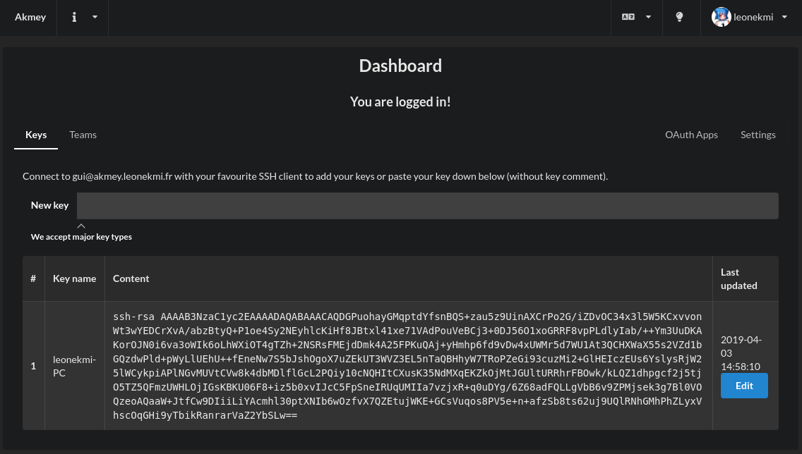

With Akmey tools, you can publish keys to an Akmey server. After, your friend can add your key in its own auhtorized_keys file.
See a demo down there:
Step 1 : add my key
Step 2 : let Bob install it
Akmey has a web interface to easily manage keys and teams.

The akmey client is a NPM package: npm install -g akmey@latest, the help is included in the client.
The server is also available : git clone https://github.com/akmey/akmey-server, the instructions is in INSTALL.md